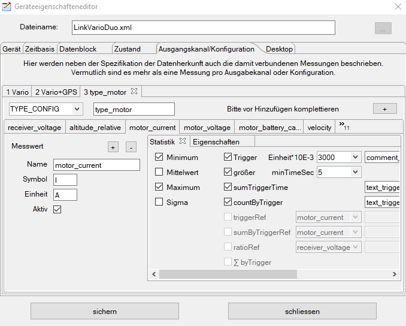

Der GNU DataExplorer ist ein Werkzeug zum Aufnehmen, Betrachten und Auswerten von Daten aus Geräten, die es erlauben Daten entweder über eine serielle Schnittstelle auszulesen oder ihre Daten auf andere Weise zugänglich machen (CSV-Datei, USB Anschluss). Der GNU DataExplorer ist unter vielen Betriebssystemen mit 32 und 64 Bit lauffähig (GNU/Linux, Windows, Mac OS). Sprachenunterstützung ist vorhanden, wobei aktuell Deutsch und Englisch vorhanden sind.
Ein wesentlicher Aspekt für die Entwicklung war der systemübergreifende Gedanke. Für nicht Windowsbenutzer soll eine ähnliche Funktionalität zur Verfügung gestellt werden, wie es LogView für Windowsbenutzer heute schon bietet. Deshalb basiert die Implementierung auf Java unter Verwendung der freien RXTXcomm Bibliothek, für die serielle Anbindung und der eclipse SWT Bibliothek für die Benutzeroberfläche. Für beide Basisbibliotheken gibt es die native Anbindung für Windows, GNU/Linux und Mac OS. Entwickelt wird mit einer frei verfügbaren eclipse IDE (integrated development environment) und einer Java 6 runtime.
Wie sind die seriellen Ports auf den verschiedenen
Betriebssystemen benannt:
Im wesentlichen gibt es dafür zwei Gründe. Erstmal wird der Gedanke freier Software weitergetragen. Für den GNU DataExplorer sind die Schnittstellen für eine Geräteanbindung und das Datenmodell frei zugänglich. Das ermöglicht Eingriffe in den Anwendungskerncode, um Fehler zu beseitigen oder Funktionserweiterungen einzubringen. Es wird möglich weitere Geräte anzubinden, die mir selbst nicht zur Verfügung stehen. Die gerätespezifischen Komponenten sind als Module extra gehalten und werden zu Laufzeit des Programms dynamisch geladen (plug-in). Das ermöglicht eine Implementierung der Gerätefunktionalität unabhängig von der Kernkomponente. Es gibt offene Beispielimplementierungen an die man sich halten kann. Um ein Gerät in die Anwendung einzubinden erfordert etwa drei Dinge: das Gerät selbst, Erfahrung mit deren Gebrauch und die Spezifikation der Schnittstellenkommunikation (und natürlich Programmierkenntnisse).
Dadurch, dass ein Javaprogramm in einer eigens dafür gestarteten "Virtual Machine" (VM) läuft, ist die Laufzeitumgebung in erster Näherung auf allen Systemplattformen gleich. Deshalb kann ein Javaprogramm fast überall laufen. Die VM bestimmt auch den zur Verfügung gestellten Speicher. Anders als z.B. ein in C geschriebenes Programm kann ein Javaprogramm nur auf den Speicher zurückgreifen, der beim Start der VM angegeben wurde. Das bedeutet, dass einem Javaprogramm, immer beim Starten den Speicherverbrauchsrahmen mitgegeben werden muss (-Xms/-Xmx). Gibt man hier nichts an, ist ein maximaler Wert von 128 MByte eingestellt. Nun hört sich VM, wie ein eigenes System an, aus dem man nicht ausbrechen kann. Wäre dem so, gäbe es keine serielle Kommunikation und keine Grafikbibliothek, zum flotten Anzeigen. Früher war dem auch so, deshalb eilt einem Javaprogramm auch immer der Ruf voraus, dass Javaprogramme langsam sind. Durch die "just in time" (JIT) Übersetzung beim Start ist dieses Manko schon lange ausgeglichen. Javaprogramme stehen anderen direkt in Maschinensprache übersetzten Programmen in nichts nach. Durch das "Java Native Interface" kann man sozusagen in Java auf die Hardware durchgreifen. Hier sind es dann meist auch C-Programme, die hier angesprochen werden. Das ist bei dem verwendeten RXTXcomm und beim SWT der Fall. Wie man sieht bekommt man mit der Programmiersprache Java, beziehungsweise der Laufzeitumgebung, eine unglaubliche Anzahl von Bibliotheken zur Verfügung gestellt. Des weiteren gibt es unter der GPL Lizenz bereitgestellte Bibliotheken, die auch in kommerziellen Anwendungen verwendet werden dürfen.
Hinweis: Bitte verwenden Sie keinen Installationspfad der Umlaute enthält. Java arbeitet mit dem UTF-8 Zeichensatz, beim Übersetzen eines Umlautes entstehen kryptische Zeichen, was dann zu Fehlverhalten führt.
Welche Verzeichnisse bei der Installation verwendet und angelegt werden ist in der README Datei beschrieben. Hier soll es viel mehr um die Verzeichnisse gehen, die das Programm zum Ablegen von Einstellungen, Grafikvorlagen und Tracelogdateien benutzt.
Als Basisverzeichnis benutzt das Programm
Hier werden die Verzeichnisse
angelegt. Das soll als Übersicht reichen. Später im Text wird dann noch genauer auf den Inhalt der Verzeichnisse eingegangen.
Wie sind die Daten organisiert, die die eigentlichen Messwerte enthält. Es muss ein Stammordner ausgewählt werden (siehe Einstellungsdialog), darunter werden für jedes benutzte Gerät, Ordner angelegt. Die Geräteordner entsprechen dem ausgewältem Gerätenamen. Zusätzlich werden Ordner für jedes angelegte Objekt angelegt. Beim sichern einer Datendatein wird ein Dateiname entsprechend der Konfiguration im Einstellungsdialog vorgeschlagen. Als Beispiel Datum_Objektname.osd. Hat nun die angezeigte Datenaufnahme einen Bezug zu einem Objekt, ein Objekt ist beim sichern angelegt und ausgewählt, wird zusätzlich zur Datendatei im Geräteordner ein Dateilink in dem Objektordner abgelegt. Dateilinks brauchen nur sehr wenig Platz, da sie ja nur einen Verweis auf eine andere Datei darstellen. Es gibt keine Duplizierung von Datendateien. Mit der Verwendung von Objekten sieht man beim öffnen einer Datei nur die objektbezogenen Dateien. Dadurch kann man beispielsweise leicht erkennen, wann der Akku des Objektes XY das letzte mal geladen wurde. Beispielhaft soll hier mal ein kleiner Ordnerstrukturausschnitt dargestellt werden:

Hinweis: Da Dateilinks betriebssystemspezifisch sind gibt es die Möglichkeit die Dateilinks zu entfernen und neu zu erstellen (siehe Einstellungsdialog). Dadurch ist ein Umzug der Daten auf ein anderes Betriebssysteme ein Kinderspiel.
In der Titelleiste der Anwendung werden neben dem Namen der Anwendung das aktuelle Gerät und die momentan verwendete Kommunikations-Schnittstelle angezeigt. Wie die meisten fensterbasierten Programme steht eine Menübar und eine Toolbar zur Bedienung bereit. Der mittlere Bereich stellt in Tabulatorform die Fenster dar, die die eingelesenen Daten aufbereitet anzeigen. Die graphische Ansicht, die die Daten in Kurvenform darstellt ist die eigentliche Hauptansicht. Die meisten anderen Fenster stellen nur Detailansichten der Daten dar.

Ganz unten befindet sich eine Statusbar. Hier werden der Zustand der Kommunikationsschnittstelle, in diesem Fall die seriellen Schnittstelle, offen, geschlossen, sendend und empfangend, angezeigt. Daneben befindet sich eine Fortschrittsanzeige, die bei aufwendigen Datenoperationen den Fortschritt der Operation anzeigt. In dem Bereich links neben der Fortschrittsanzeige werden Statusmeldungen angezeigt. Das können Warnungen oder auch Messwerte sein, die beim Vermessen der Kurven entstehen.
Der Einstellungsdialog dient zum Einstellen:

Über den Tabulator für Verschiedenes kann man das Desktop-Starter-Icon erneut erstellen, bzw. entfernen. Ebenso kann hier die DataExplorer MIME Typ Assoziation zu den Dateiendungen *.osd und *.lov registriert, bzw. entfernt werden. Leider ist das für MAC OS zur Zeit nicht unterstützt.

Die Taste "Erstelle Linkdateien" erzeugt von allen OSD Dateien die dazugehörigen, fehlenden Objektverzeichnisse. Die Taste "Lösche Linkdateien" löscht alle Linkdateien in den Objektverzeichnissen. Nicht verändert werden dabei die Dateien, die die Objektbeschreibung enthält. Beide Funktionen sind sehr praktisch, wenn man Anwendungsdateien auf eine andere Ausführungsplattform umziehen oder sichern möchte.
Über den Analyse Tabulator erreicht man Einstellmöglichkeiten für eine Fehleranalyse. Nach einem Programmabsturz sollte in einer trace.log Datei eine mögliche Erklärung zu finden sein. Achtung, alle Verstellungen der Loglevel haben einen Einfluss auf die Laufzeit und das kann zu nicht absehbaren Nebeneffekten führen. Alle Einstellungen sollten mit diesem Wissen vorgenommen werden. Die Werte sind entsprechend der Informationsfülle gestaffelt,
Der untere Abschnitt ermöglicht die Einstellung der Loglevel auf bestimmte Bereiche oder klassenbasiert. Ohne besonderen Grund sollte man auch hier nicht unbedingt über den Level FINE einstellen, sonst werden die Logdaten unübersichtlich.

Der klassenbasierte Loglevel erlaubt den logging Level auf ausgewählte Klassen zu reduzieren. Hierdurch wir die Ausgabe übersichtlicher und erlaubt die Analyse weiter einzuschränken. Die Selektion des Loglevels wir über ein Kontextmenü erreicht. Erst durch schließen des Dialogs wird die Einstellung wirksam.
In jedem Fall werden immer nur drei Tracelogdateien mit einigen Megabyte Größe geschrieben. Die Dateien überschreiben sich dann immer wieder selbst.
Hinweis: Im Fehlerfall immer mal wieder einen Blick in das Logs Verzeichnis werfen, hier können wertvolle Hinweise zu für die Fehleranalyse zu finden sein (siehe Verwendete Verzeichnisse).
Mit dem Geräteauswahldialog können die Geräte ausgewählt werden, die der Anwendung zur Verfügung stehen sollen. In dieser Ansicht findet man alle Geräte, die eine Gerätekonfigurationsdatei im "Devices" Verzeichnis abgelegt haben.

Die eigentliche Auswahl des aktiven Gerätes passiert allerdings auf dem "Einstellungen" Tabulator oder durch die Geräteanwahl in der Menübar oder Toolbar.

Die Auswahl des aktiven Gerätes kann durch Selektion, direkt über der Miniaturansicht geschehen oder durch den Schieber rechts daneben. Das Bild des gerade angewählten Gerätes wird angezeigt. Als Zusatzinformationen wird neben dem Bildchen der Name des Gerätes und Herstellerinformationen angezeigt. Direkt unter den Geräteinformationen befinden sich zwei Schalter um ein gerätespezifisches Verhalten bezüglich des seriellen Ports und der Geräte-Dialog einzustellen.
Hinweis: Das aktive Gerät kann auch über die Menübar oder Toolbar gewechselt werden.
Unter dem aktuell gewählten Gerät wir der Kommunikationsport ausgewählt. Ist nur ein serieller Port am System verfügbar, wählt die Anwendung selbstständig den seriellen Port. Die Bilder zeigen eine Portauswahl unter Windows mit COM4 und einmal unter GNU/Linux mit einem USB zu Seriell Adapter als /dev/ttyUSB0.


Durch den nachfolgenden Bereich des Dialoges kann bestimmt werden ob die Tabulatoren mit ihren Inhalten angezeigt werden. Bei langsamen System kann hier das Laufzeitverhalten der Anwendung beeinflusst werden.


Die mittleren Schalter, Digital und Analog, sind vor allem für eine Live-Anzeige von Daten während einer Messung vorgesehen und machen bei vielen Geräten wenig Sinn. Bietet ein angeschlossenes Gerät keine Live-Datenabfrage werden hier nur die Endwerte einer Kurve angezeigt. Eine bemerkbare Zeiteinsparung bei der Berechnung der Daten ist hier allerdings nicht gegeben, da ja nur Einzelwerte angezeigt werden. Im unteren Bereich sind die Einstellungen Gerätespezifisch und nicht über diesen Dialog einstellbar. Hier muss die Gerätekonfigurationsdatei bearbeitet werden. Beispielhaft die Ansicht der Spannung pro Akkuzelle ist auch einen Live-Anzeige und stellt die einzelnen Zellen als Balkendiagramm dar. Das gilt aber nur für Geräte die diese Messwerte auch hergeben, also einige Ladegeräte für LiPo Akkus oder Balancer.

Im unteren Bereich des Dialoges werden noch die für das Gerät verwendeten Einstellungen des seriellen Ports angezeigt. Eine Veränderung ist nicht vorgesehen kann aber durch Verändern der Gerätekonfigurationsdatei erreicht werden.
Die Menübar stellt alle notwendigen Standardelemente zur Verfügung, um die Anwendung zu steuern. Die Toolbar stellt mit Piktogrammen versehene Steuerelemente bereit, die am häufigsten verwendet werden.

Von dem Datei-Menü aus werden alle Aktionen ausgeführt,
die eine Datei als Grundlage haben


Die Funktionen aus dem dateiorientierten Bereich sind auch über die Toolbar erreichbar.

Über dieses Menü kann der Inhalt vom Grafikfenster
vergrößert und verschoben werden. Ebenso sind die wichtigsten Kopieroperationen in die Zwischenablage hier hinterlegt.

Hinweis : Kopieren und Ändern der Hintergrundfarbe ist für die meisten Fenster über das Tabulatorfenster eigene Kontextmenü möglich (rechte Maustaste)
Die Funktionen, mit der die graphische Ansicht der Kurven verändert werden können sind auch über die Toolbar erreichbar. Hier gibt es zusätzlich noch die Möglichkeit Kurven an den Außenbereichen zu beschneiden oder die Ansicht auf eine Anzahl von letzten aktiven Punkten zu beschränken. In der Toolbar werden die Knöpfe erst aktiviert, wenn diese Operation auch möglich ist.

Das Beispiel zeigt die Positionierung des Bereiches, das nach der Schneideoperation nicht mehr vorhanden sein soll. Ein Dialog fragt nach Bestätigung für die Schneideoperation, die dann eine Kopie des Datensatzes anlegt. Der Benutzer kann selbst entscheiden, den unbeschnittenen Datensatz zu löschen oder zu behalten.

Beschnittene Datensätze bekommen am Ende des Namens einen Unterstrich. Der Originaldatensatz geht dabei nicht verloren.
Hinweis : Datensatznamen können nach drücken des Editierknopfes verändert werden, so wie es hier beschrieben ist.
 In diese Menü kann man gerätespezifische Aktionen auslösen
In diese Menü kann man gerätespezifische Aktionen auslösen
Die Geräte spezifischen Funktionen, die man häufig benutzt, erreicht man ebenfalls über die Toolbar.

Zusätzlich gibt es die Möglichkeit Datenaufnahmen nicht nach Geräten, sondern als Objekt über die Gesamtheit der Geräte, zu ordnen. Wird "gerätebezogen" ausgewählt bleibt alles wie gehabt.

Wählt man, oder erstellt über den Plusknopf, einen Objektschlüssel, wird ein neues Tabulatorfenster, Fenster "Objektcharakteristik", angezeigt. In diesem Tabulatorfenster kann man das Objekt, dessen Schlüssel nun ausgewählt ist, näher beschreiben. Bei Eingabe oder Wechsel des Objektschlüssels wird erfragt, ob dieser Schlüssel dem Aktuellen Datensatz zugeordnet werden soll. Unabhängig, von der Antwort, werden beim Öffnen einer Datei nur noch Dateien angezeigt, die diesen Objektschlüssel beinhalten.

Im Grafikvorlagenmenü werden die Vorlagen verwaltet, die das Aussehen des Grafikfensters beeinflussen. Falls vorhanden, wird entsprechend der Konfiguration oder des Geräteausgangs die Grafikkonfiguration geladen. Grafikvorlagen enthalten die Skaleneinteilung, Kurvenfarben, usw.. Die meisten Einstellungen, die über das Kurvenselektor-Kontextmenü eingestellt werden, werden in Grafikvorlagen gesichert. Der Pfad zu diesen Dateien ist "GraphicTemplates" unter dem Anwendungskonfigurationspfad. Gibt es zu einer Datei zur Aktualisierungszeit eine passende Grafikvorlage, wird diese automatisch geladen.

Hat man für sich einen Einstellung gefunden, die die Kurven, die man für wichtig hält, anzeigt, sollte man diese Grafikkonfiguration als Standard sichern.
Hinweis : Die Funktion der Grafikvorlagen ergänzt sich bei manchen Geräten mit der Sichtbarkeitskonfiguration. Sind Messkurven in der Sichtbarkeitskonfiguration ausgeschaltet oder enthalten keine sinnvollen Daten, z.B. nur Nullen, werden sie auch durch Laden der Grafikkonfiguration nicht sichtbar. Geräte mit Messkurven Sichtbarkeitskonfiguration sind CSV2SerialAdapter, WStech, GPS-Logger, NMEA-Adapter, UniLog, und viele andere. Mit dem Dialog der Sichtbarkeitskonfiguration, kann man deren Erscheinen aber erzwingen.
Dieses Menü blendet den Kurvenselektor des Grafikfensters ein oder aus. Des weiteren kann man hier eine Überschrift sowie den Kommentarbereich des einzelnen Datensatzes ein oder ausblenden. Diese Funktion ist auch über das Kontextmenü der grafischen Anzeige erreichbar


Mit dem Hilfemenü erreicht man diese Beschreibung und den About-Dialog, der die Versionsnummer der Anwendung bekannt gibt. Durch die Selektion von Versioncheck erreicht man die Webseite des DataExplorers und kann überprüfen ob eine neuere Version des Programms verfügbar ist. Es werden keine Anwender bezogenen Daten, noch Systemdaten in irgend einer Form weitergeleitet, sondern lediglich eine die URL der Webseite aufgerufen.


Die Anwahl des Gerätedatenanschusses, bzw. der Konfiguration, falls für das jeweilige Gerät vorhanden, wählt man über den markierten Bereich aus. Die danebenliegenden Pfeilschalter schalten einen Anschluss, bzw. eine Konfiguration vor, bzw. zurück. Die Anwendung merkt sich welcher Anschluss, bzw. welche Konfiguration als letztes benutzt wurde und stellt diese Auswahl beim nächsten Starten des Programms geräteabhängig wieder her.

Ein Anschluss entspricht einem Steckeranschluss bei einem Mehrfachladegerät an dem der Akku angeschlossen wird. Eine Konfiguration macht Sinn bei Geräten, mit denen man Messungen in bestimmten Bereichen vornehmen kann, Motorstrom, Versorgungsstrom, ohne Strom. Mit einer Konfiguration ist auch die für den Einsatzzweck verbundene statistische Aufbereitung der Daten verbunden. So zum Beispiel, wie lange die Motorlaufzeit war, welche Leistung dabei verbraucht wurde, welche Gesamthöhe dabei erreicht wurde oder ...
Den Datensatz, der gerade angezeigt werden soll, kann man dann über den danebenliegenden Datensatz-Selektor auswählen. Hier gibt es analog dazu auch die Möglichkeit vor oder zum nächsten Datensatz zu schalten

Die in diesem Toolbar-Teilstück, die ganz links liegenden Knöpfe, dienen zum Löschen (Mülleimer) eines Datensatzes, bzw. zum Bearbeiten des Datensatznamens. Durch drücken des Editiersymbols, kann man den Namen des Datensatzes verändern. Ein Druck auf die Entertaste schließt diese Aktion ab.
Wenn der gerade angezeigte Datensatz GPS (Global Positioning System) Daten enthält ist es möglich daraus eine KML Datei zu exportieren und mit der Google Earth Anwendung anzuzeigen. Der Globusknopf in der Toolbar verändert sein Aussehen und signalisiert damit, ob diese Funktion möglich ist.

Hinweis : Dateien, die über den Globusknopf der Toolbar exportiert und angezeigt werden, landen im temporären Ordner des Dateisystem und werden beim Schliessen der Anwendung gelöscht. Möchte man diese Dateien aber behalten, sollte man den gerade angesehen Ausschnitt über die Menübar - Export - KML 3D Datei oder GPX track an einem beliebigen Platz im Dateisystem sichern.
Als Beispiel ist hier der Flug angezeigt, der mit dem DataVarioDuo mit GPS aufgezeichnet wurde.

Ein durch Zoomen begrenzter Ausschnitt eines Fluges stellt sich dann so dar:

Über den gezeigten Toolsknopf wird der Farb-Geschwindigkeitskonfiguration möglich. Die linke Seite dient der Konfiguration der Farben für die drei möglichen Geschwindigkeitsbereiche.

Der Dialog ist zwei mal dargestellt, um die Unterschiede zwischen der Konfiguration vom Mittelwertfaktor zu erklären (blaue Umrandung). Wird der Mittelwertfaktor zu 0 gesetzt werden die Felder zur Minimum und Maximum Konfiguration freigeschaltet und einen Eingabe ermöglicht. Ist der Mittelwertfaktor größer als 0, werden daraus Minimum und Maximum als Wert automatisch berechnet.
Tipp: Es lassen sich auch GPS Daten in Form von GPX Dateien exportieren, die dann aber manuell in Google Earth geladen werden müssen. Hier gibt aktuell leider keine Möglichkeit dieses Datenformat automatisch zu öffnen.

Das graphische Anzeigefenster ist das eigentlich Hauptfenster der Anwendung. Hier werden die eingelesenen Daten in Kurvenform dargestellt. Durch Selektion der einzelnen Kurvennamen im Kurvenselektor kann die Sichtbarkeit der einzelnen Kurve direkt ein- oder aus-geschaltet werden. Gleichzeitiges Anzeigen von zu vielen Kurven schränkt die Übersichtlichkeit stark ein (siehe hierzu Grafikvorlagen). Deshalb ist dieser Auswahlschalter einer der wichtigsten der Anwendung und direkt erreichbar.

Über den Kurvenselektor sieht man anhand der Farbübereinstimmung den Zusammenhang zu den gezeichneten Kurven. Der Kurvenselektor repräsentiert die Kurvenlegende und ermöglicht durch Selektion ein aktiv-, bzw. inaktiv-schalten der Kurven.

Mittels des Kontextmenüs (eines jeden Tabulators) lässt sich deren Aussehen anpassen
 Ganz oben im Kontextmenü befindet sich der Name der Kurve, die man gerade im
Fokus hat. Alle Änderungen der Einstellung beziehen sich also auf
die Darstellungseigenschaften dieser Kurve.
Ganz oben im Kontextmenü befindet sich der Name der Kurve, die man gerade im
Fokus hat. Alle Änderungen der Einstellung beziehen sich also auf
die Darstellungseigenschaften dieser Kurve.
Über das Kontextmenü kann man die Kurve sichtbar oder unsichtbar schalten. Ist eine Kurve unsichtbar geschaltet und eine Veränderung der Kurveneigenschaften wird ausgelöst, wird die Kurve automatisch sichtbar geschaltet. Als Beispiel soll eine nicht sichtbare Kurve vermessen werden, so werden die Messlinien aktiviert und die Kurve, die man vermessen möchte sichtbar geschaltet.
Durch Selektion von Kurvenlinienfarbe wird ein Farbauswahldialog gestartet, durch den die Linienfarbe der Kurve eingestellt werden kann. Die Farbe wird auch für die Basislinie der vertikalen Achse verwendet, um eine leichte optische Zuordnung zu erreichen. Außerdem wird die Farbe für die Zahlen in der Digitalanzeige und die Kreisskalagrundlinie in der Analoganzeige verwendet.
Die Einstellung der Kurvenliniendicke erlaubt ein optisches hervorheben einer einzelnen Kurve.
Die Veränderung des Kurvenlinientyps hat nur geringe Bedeutung. Da, bei den meisten Kurven, der Abstand zwischen den einzelnen Kurvenpunkten gering ist, ist die Wirkung in den meisten Fällen nicht gegeben. Hier muss die Wirkung in Abhängigkeit der Punktabstände individuell ausprobiert werden.
 Der
nächste Block im Kontextmenü konfiguriert die Achsen und damit
auch die Skalen der jeweiligen Kurve. Automatik nimmt die Minimum
und Maximum Werte, wie sie in den Kurvendaten vorkommen als
Endbegrenzung. Gerundet, rundet in Abhängigkeit der
Wertgröße auf oder im negativen Fall ab. Die Selektion beginnt
bei 0 kann mit "gerundet " oder "automatik" zusammen
verwendet werden. Der Anfangspunkt der Skala wir auf Null gesetzt.
Der
nächste Block im Kontextmenü konfiguriert die Achsen und damit
auch die Skalen der jeweiligen Kurve. Automatik nimmt die Minimum
und Maximum Werte, wie sie in den Kurvendaten vorkommen als
Endbegrenzung. Gerundet, rundet in Abhängigkeit der
Wertgröße auf oder im negativen Fall ab. Die Selektion beginnt
bei 0 kann mit "gerundet " oder "automatik" zusammen
verwendet werden. Der Anfangspunkt der Skala wir auf Null gesetzt.
 Wählt man manuell öffnet sich ein kleiner Dialog der die
Einstellung der Achsenendwerte erlaubt. Werte können nicht nur
durch Selektion verändert werden, sonder durch Eingabe über
die Tastatur, also durch Überschreiben. Als Dezimalseparator kann
Punkt oder Komma verwendet werden. Drücken der Entertaste oder
Selektion des OK Knopfes schließt die Eingabe ab.
Wählt man manuell öffnet sich ein kleiner Dialog der die
Einstellung der Achsenendwerte erlaubt. Werte können nicht nur
durch Selektion verändert werden, sonder durch Eingabe über
die Tastatur, also durch Überschreiben. Als Dezimalseparator kann
Punkt oder Komma verwendet werden. Drücken der Entertaste oder
Selektion des OK Knopfes schließt die Eingabe ab.
 Mit dem Menüpunkt Achsen-Zahlenformat bestimmt man die Genauigkeit
der Anzeige. Zu viele Stellen hinter dem Komma suggerieren aber auch
eine Genauigkeit, die möglicherweise durch die Messung oder das
Messmittel gar nicht gegeben sind. Die Einstellung automatisch passt die Anzahl der Nachkommastellen der Wertegröße an.
Mit dem Menüpunkt Achsen-Zahlenformat bestimmt man die Genauigkeit
der Anzeige. Zu viele Stellen hinter dem Komma suggerieren aber auch
eine Genauigkeit, die möglicherweise durch die Messung oder das
Messmittel gar nicht gegeben sind. Die Einstellung automatisch passt die Anzahl der Nachkommastellen der Wertegröße an.
Mit der Achsen-Position bestimmt man die Seite auf der die Achse zu der Kurve mit der Skala dargestellt werden soll. Da wir von links nach rechts lesen, sind bei mir die wichtigeren Kurvenachsen vorzugsweise links angeordnet.
 Der
Kontextmenü-Block zur Einstellung von Gridlinien gibt die
Möglichkeit vertikale, also auf der Zeitachse, Gridlinien zu
zeichnen. Die Einstellung der Farbe der Gridlinien erlaubt, Gridlinien
im Hintergrund zu belassen. Sonst sieht man vor lauter Gridlinien
womöglich die eigentlichen Kurven nicht mehr. Die Einstellung auf
"mod 60" bedeutet einen geraden Teiler, je nach dargestellter
Gesamtzeit 60 Sekunden oder 60 Minuten.
Der
Kontextmenü-Block zur Einstellung von Gridlinien gibt die
Möglichkeit vertikale, also auf der Zeitachse, Gridlinien zu
zeichnen. Die Einstellung der Farbe der Gridlinien erlaubt, Gridlinien
im Hintergrund zu belassen. Sonst sieht man vor lauter Gridlinien
womöglich die eigentlichen Kurven nicht mehr. Die Einstellung auf
"mod 60" bedeutet einen geraden Teiler, je nach dargestellter
Gesamtzeit 60 Sekunden oder 60 Minuten.
 Die horizontalen
Gridlinien haben eine Zuordnung zu einer Kurve. Die Kurve, mit der die
Einstellung vorgenommen wurde wird angezeigt. Die Einstellung auf
"jede zweite Zeitmarke" (Hauptskalenteilung) dünnt die
horizontalen Gridlinien etwas aus. Horizontale Gridlinien können
immer nur für eine Kurve angezeigt werden.
Die horizontalen
Gridlinien haben eine Zuordnung zu einer Kurve. Die Kurve, mit der die
Einstellung vorgenommen wurde wird angezeigt. Die Einstellung auf
"jede zweite Zeitmarke" (Hauptskalenteilung) dünnt die
horizontalen Gridlinien etwas aus. Horizontale Gridlinien können
immer nur für eine Kurve angezeigt werden.
Über den Kontextmenüpunkt Kurven Vermessen kann man über ein eingeblendetes Fadenkreuz Kurvenpunkte vermessen. Dazu wird im Kontextmenü Kurvenpunkt messen selektiert. Nachdem das Kontextmenü verschwunden ist wird ein Fadenkreuz aus gestrichelten Linien dargestellt. Bewegt man den Mauszeiger unmittelbar über der senkrechten Linie, ändert sich der Mauszeiger, so wie im Bild vergrößert dargestellt. Durch drücken und halten der linke Maustaste kann nun der senkrechte Strich verschoben werden, wobei der waagerechte Strich automatisch der Kurve folgt. Dabei wird der aktuelle Messwert unten in der Statusleiste, rechts neben dem Fortschrittsbalken angezeigt.


Mit Punktdifferenz messen wird der Differenzwert zwischen zwei Kurvenpunkten gemessen. Dabei wird dann auch die Einheit über die Zeit gebildet und angezeigt.

Als Messfadenkreuz werden ein schwarzes und ein blaues Fadenkreuz eingeblendet. Beide werden genau so bewegt, wie bei der Einzelpunktvermessung. Besonders sinnvoll sind solche Messungen im vergrößertem Zustand. Hier wird als Zusatzinformation noch die Anfangszeit des Kurvenausschnittes angezeigt.
 Als letzter Block im Kontextmenü sind die Funktionen zur
Übertragung in das Kurvenvergleichsfenster Kopiere
Kurvenvergleich und das Säubern des Kurvenvergleichsfensters Lösche
Kurvenvergleich angeordnet. Letzter Punkt, das Löschen aller Kurven im Vergleichsfensters, wird erst aktiv geschaltet,
wenn sich mindestens einen Kurve im Vergleichsfenster befindet.
Als letzter Block im Kontextmenü sind die Funktionen zur
Übertragung in das Kurvenvergleichsfenster Kopiere
Kurvenvergleich und das Säubern des Kurvenvergleichsfensters Lösche
Kurvenvergleich angeordnet. Letzter Punkt, das Löschen aller Kurven im Vergleichsfensters, wird erst aktiv geschaltet,
wenn sich mindestens einen Kurve im Vergleichsfenster befindet.
Hinweis : Es ist möglich Kurven mit identische Einheit gleichzeitig darzustellen. So z.B. Spannungskurven eines Akkus aus verschiedenen Messungen des selben Messgerätes.
Sind innerhalb eines Datensatzes Kurven des selben Typs vorhanden, werden die Skalen mit gleichzeitiger Synchronisation der Endwerte zusammengefasst. Als Beispiel seien die Einzelspannungskurven von Lithiumzellen genannt. Der Vergleich, der beiden nachfolgenden Bilder, soll das Verhalten verdeutlichen.

Das spart nicht nur Platz, sondern alle betroffenen Kurven besitzen dadurch die selben Min- und Max-Werte. Hierdurch sind die Kurven optisch vergleichbar.

Hinweis : Die Synchronisation wird über eine Eingenschaft in der Gerätekonfigurationsdatei eingestellt (siehe hierzu Messwerteeingenschaften).

 Wird das Menü zoomen
aktiviert ändert sich der Mauszeiger zu einem kleinen Kreuz, das
durch drücken der rechten Maustaste einen Eckpunkt des
Kurvenausschnittes festlegt. Bei gedrückt gehaltener Maustaste kann
nun ein Ausschnitt gewählt werden, der dann nach dem Loslassen der
Maustaste vergrößert dargestellt wird. Hinweis : Möchte
man ausschließlich in einer Richtung zoomen, kann der Anfangs- und
End-Punkt des Auswahlbereichs außerhalb der Kurvenbegrenzung
liegen. Dadurch erreicht man, dass das Auswahlrechteck und den
horizontalen oder vertikalen Begrenzungen beginnt. Auch im bereits
vergrößertem Kurvenausschnitt lässt sich im Bedarfsfall
weiter hineinzoomen.
Wird das Menü zoomen
aktiviert ändert sich der Mauszeiger zu einem kleinen Kreuz, das
durch drücken der rechten Maustaste einen Eckpunkt des
Kurvenausschnittes festlegt. Bei gedrückt gehaltener Maustaste kann
nun ein Ausschnitt gewählt werden, der dann nach dem Loslassen der
Maustaste vergrößert dargestellt wird. Hinweis : Möchte
man ausschließlich in einer Richtung zoomen, kann der Anfangs- und
End-Punkt des Auswahlbereichs außerhalb der Kurvenbegrenzung
liegen. Dadurch erreicht man, dass das Auswahlrechteck und den
horizontalen oder vertikalen Begrenzungen beginnt. Auch im bereits
vergrößertem Kurvenausschnitt lässt sich im Bedarfsfall
weiter hineinzoomen.

Die Verschiebefunktion ändert den Mauszeiger in eine Hand. Nun lässt sich die Kurve bei gedrückter linker Maustaste positionieren.
Das Zurücksetzen des vergrößerten Kurvenausschnittes erfolgt, wie in der Beschreibung der Menüs durch Selektion der Funktion "Zoom Grafikfenster zurücksetzen".
Um während eines Aufnahmevorgangs laufend einen vergrößerten Ausschnitt, der zuletzt aufgenommenen Werte, zu verfolgen, wird ein Schalter angeboten über den die Anzahl der angezeigten Messpunkte bestimmt werden kann. Nun kann man, ähnlich einem Oszilloskop, die Datenaufnahme betrachten.

Oben in der Toolbar ist der Schalter eingekreist. Ausgewählt sind aktuell 50 Punkte. Unten ist der sich ständig verändernde Wert des ausgeblendeten Zeitraums eingekreist. Hier bekommt man die Übersicht über die Laufzeit des gesamten Messablaufes. Im Beispiel sind vier Spannungskurven von Lithiumzellen gezeigt, die über den Balancer ständig korrigiert werden.
Im Gegensatz visualisiert das Zellenspannung Anzeigefenster nur den letzten Messwert.
Das Statistikfenster zeigt für alle Messgrößen, die auch grafisch angezeigt werden können, statistische Größen an. Die Anzeige wird durch die aktuell gültige Geräteeigenschaftsdatei bestimmt. Es ist möglich eine sogenannten Trigger (Schwellwertschalter) zu konfigurieren. Fallen Daten in den Triggerbereich, können alle statistischen Werte auf diesen bezogen werden oder es können Maxima aus den Triggerbereichen aufsummiert werden. Wie im gezeigten Beispiel ist das auf die Höhe angewendet worden. Durch einen Kommentar wird der Bezug zum Triggerbereich verdeutlicht.
Soll die Statistikkonfiguration für einen Messwert angepasst werden, muss der Editor für die Gerätekonfiguration (DevicePropertiesEditor) über das Menü oder direkt aufgerufen werden.
Die Tabellenansicht zeigt die aktuellen Daten von allen Kurvenpunkten an, auch, wenn eine Kurve nicht sichtbar geschaltet ist. Je nach Anzahl den Messwerte ergibt sich einen stattliche Anzahl von Werten.

Große Datenmengen machen aber die Tabellenansicht unübersichtlich. Deshalb kann man die Anzeige für jedes Gerät im Geräteauswahldialog stilllegen (Desktopkonfiguration).
Das Digitalfenster ist dafür gedacht aktuelle Werte in Zahlenform, die im Moment aufgenommen wurden anzuzeigen. Wenn, zum Beispiel, ein Ladegerät alle 10 Sekunden eine Messung vornimmt wird der daraus resultierende Messwert numerisch angezeigt. Die Farbe der numerischen Hauptdarstellung entspricht der eingestellten Kurvenfarbe.

Wie schon erwähnt werden hierfür keine Berechnungen vorgenommen, sondern nur die Werte, mit der über das Kurvenselektor-Kontextmenü eingestellten Genauigkeit (Achsen-Zahlenformat) entsprechend, angezeigt.
Da diese Anzeige nur während der Livedatenaufnahme verändernde Werte anzeigt kann man die Anzeige für jedes Gerät im Geräteauswahldialog stilllegen wenn dieser Tabulator stört (Desktopkonfiguration).
Hinweis : Es werden alle aktiven und sichtbaren Messwerte, ausgewählt über den Kurvenselektor, mit konfigurierter Nachkommastelle dargestellt.
Das Analogfenster zeigt, so, wie für das Digitalfenster, gewählten Messwerte, an. Die Farbe der Skalengrundlinie entspricht der eingestellten Farbe für die Messkurve. Damit die Anzeige eine hohe Auflösung hat und trotzdem ruhig wirkt, werden für die Skalenendwerte gerundete Werte verwendet. Die Rundung entspricht der Einstellung für Runden der Skalen im Grafikfenster.

Da diese Anzeige nur während der Livedatenaufnahme verändernde Werte anzeigt kann man die Anzeige für jedes Gerät im Geräteauswahldialog stilllegen wenn dieser Tabulator stört (Desktopkonfiguration).
Hinweis : Es werden alle aktiven und sichtbaren Messwerte, ausgewählt über den Kurvenselektor, mit konfigurierter Nachkommastelle dargestellt. Bei Skalensynchronisation sind für alle synchronisierten Messwerte die Endwerte gleich.
Die Zellen-Einzelspannungsanzeige ist für Ladegeräte gedacht, die Einzelzellenspannungen von Akkuzellen herausgeben, ausgelegt und zeigt die Spannungen jeder Zelle numerisch und als Balkendiagramm an.

Die Anzeige der Balken wird, in Abhängigkeit des Zellentyps, im Beispiel LiPo Zellen, wenn alle Zellenspannungen über 4,0 Volt liegen, gespreizt, über den Anteil, der über 4 Volt liegt, dargestellt. Hat eine Zelle eine Spannung kleiner gleich 2,6 Volt oder über 4,20 Volt wird der Balken in rot dargestellt. Bei Zellenspannungen zwischen 2,6 und 4,2 Volt zeigt sich der Balken in gelb. Beträgt eine Zellenspannung genau 4,2 Volt färbt sich der Balken grün.

Die Bilder sollen das Verhalten etwas verdeutlichen.
 Es ist möglich die Spannungshöhen der einzelnen Farbfelder an die gebräuchlichsten Zellentypen anzupassen.
Gibt ein ein Gerät Informationen über die verwendeten Zellen aus, folgt die Auswahl automatisch.
Ist das nicht der Fall, muss hier leider die Auswahl von Hand erfolgen. Eine Kontrolle des Häkchens kann also nicht schaden.
Wird ein Zellentyp verwendet, der keinem der selektierbaren Typen entspricht ist eine individuelle Einstellung möglich.
Der Dialog, der durch Anwahl von "individuell" erscheint zeigt dann auch die Spannungshöhen aller vordefinierten Zellentypen und ermöglicht deren Veränderung.
Es ist möglich die Spannungshöhen der einzelnen Farbfelder an die gebräuchlichsten Zellentypen anzupassen.
Gibt ein ein Gerät Informationen über die verwendeten Zellen aus, folgt die Auswahl automatisch.
Ist das nicht der Fall, muss hier leider die Auswahl von Hand erfolgen. Eine Kontrolle des Häkchens kann also nicht schaden.
Wird ein Zellentyp verwendet, der keinem der selektierbaren Typen entspricht ist eine individuelle Einstellung möglich.
Der Dialog, der durch Anwahl von "individuell" erscheint zeigt dann auch die Spannungshöhen aller vordefinierten Zellentypen und ermöglicht deren Veränderung.
Wie der Name schon sagt ist das Kurvenvergleichsfenster dazu da, Kurven miteinander zu vergleichen. Im Bild sieht man Spannungskurven von einem alten Akku. Die Kurven wurden wiederholt über einen Zeitraum aufgenommen. Vergleiche machen natürlich nur Sinn, wenn auch die Voraussetzungen, wie die Kurven entstanden sind, möglichst gleich sind. Allein an Hand der Unterschiede der Ladezeit und der Kurvenform, sieht man im Beispiel, dass mit diesem Akku etwas nicht stimmen kann.

Das Vergleichsfenster erlaubt, wie das Grafikfenster, ein Zoomen und Vermessen der Kurven.
Sind Gridlinien im Vergleichsfenster aktiviert, werden Gridlinien in gleicher Form beim nächsten Start der Anwendung wieder hergestellt.
Hinweis : Das Programm verhindert Kurven unterschiedlicher Einheit miteinander zu vergleichen. Das Vergleichsfenster mit den darin enthaltenen Kurven wird in keiner Form gesichert. Der Tabulator selbst wird erst angezeigt, wenn über das Kurvenselktorkontextmenü die erste Kurve in den Kurvenvergleich geladen wird.

Im Dateikommentarfenster kann man eine Bemerkung, die für alle Datensätze gültig sind, notieren. Als Anfangswert wird das aktuelle Datum, wann die Datensatzsammlung angelegt wurde, eingeblendet. Diese Datum kann natürlich überschrieben werden, wenn z.B. die Daten an einem anderen Tag entstanden sind.
Das Dateikommentarfenster wird über den Tabulator aktiviert. Der Bereich für den Datensatzkommentar wird unten innerhalb des graphischen Tabulatorfensters geöffnet. Hinweis : Einige Teile des Dateikommentart können auch als Grafiküberschrift angezeigt werden. Der angezeigte Teil wird durch Komma, Semikolon, Doppelpunkt, Punkt oder Zeilenumbruch separiert und durch einen Bindestrich mit dem Datensatznamen angezeigt. Sichern der Eingabe folgt durch weiter schalten auf ein anderen Tabulator!

Zum Datensatzkommentar, auch hier gilt, die eingeblendete Zeit entspricht der Zeit, zu der, der Datensatz eingelesen wurde. Die Zeitmarke dient als Anhaltspunkt und kann überschrieben werden. Dieser Kommentar dient dazu Dinge zu notieren, die Datensatz spezifisch sind, z.B. besondere Ereignisse oder Bedingungen, die diesen Datensatz von anderen unterscheidet.
Hinweis : Alle Kommentare werden in der gespeicherten Datei abgelegt und beim nächsten Einlesen der Datei wieder angezeigt.
In diesem Fenster kann man Charakteristiken festhalten, die ein Objekt beschreiben zu dem man Daten, bzw. Messkurven festgehalten hat. Dieses Tabulatorfenster ist nur sichtbar, wenn man ein Objekt in der Toolbar ausgewählt hat.

Der editierte Inhalt wird automatisch bei Wechsel des Objekts oder schließen der Anwendung gesichert.
Hinweis : Die Objektbeschreibung gilt für viele Datendateien und wird deshalb separat in einem Objektverzeichnis gesichert. Datendateien werden weiterhin in den zugehörigen Geräteverzeichnissen abgelegt und enthalten lediglich ein Objektschlüssel. In den Objektverzeichnissen befinden sich lediglich Dateilinks zu diesen Dateien.
Gerätekonfigurationsdateien sind in XML Form angelegt. Durch das verwendetet XML style sheet (XSD) ist wird immer die Konsistenz und die Schreibweise validiert. Ein demnach ungültige Datei wird schon beim Einlesen zurückgewiesen. Zur Übersicht ist hier nochmals das aktuelle XSD als Bild wiedergegeben.

Über das Gerätemenü oder als eigenständige Anwendung aufgerufen lassen sich neue oder vorhandene Geräteeigenschaftendateien erstellen oder anpassen.
Hiermit werden die Geräte XML Dateien verändert.

Über das Menü kann eine Gerätedatei direkt geöffnet werden.
Ist das der Fall, wird die Gerätedatei des aktuellen Gerätes geladen und ein Ändern der Datei ist nun möglich.
Wobei nicht alle veränderten Eigenschaften direkt auf aktuell angezeigte Daten wirken.
Eventuell ist ein erneutes Einlesen der Messdaten nötig.
Wird der DevicePropertiesEditor als eigene Anwendung gestartet kann der Name, falls bekannt kann auch direkt eingegeben werden. Ist der Name der Datei nicht im Geräteordner enthalten, geht die Anwendung davon aus das eine neue Gerätedatei angelegt werden soll und fragt danach.
 Hierbei wird dann eine Beispieldatei extrahiert, die dann angepasst werden kann.
Durch Selektion des Knopfes auf der rechten Seite, kann über einen Dateiauswahldialog die Gerätedatei geöffnet werden.
Hierbei wird dann eine Beispieldatei extrahiert, die dann angepasst werden kann.
Durch Selektion des Knopfes auf der rechten Seite, kann über einen Dateiauswahldialog die Gerätedatei geöffnet werden.

Der Gerät Tabulator zeigt wie man Name und Herstellerangaben einträgt.
Schaltet man die Implementierung aktiv, muss hier die Geräteklasse als Klassenname oder mit package.Klassenname, als voll qualifiziert, eingetragen werden.
Eine Implementierung kann immer dann verwendet werden, wenn ein Gerät schon implementiert ist, nur der Name nicht passt.
Als Beispiel soll hier der CSV2SerialAdapter genannt werden, Unterschiede bestehen nur in der Spezifikation des Datentextblocks.
Als weiteres Beispiel können die vielen Kopien der Bantam Ladegeräte herangezogen werden, die sich im Aussehen und Namen unterscheiden.
Hier möchte man die Daten doch unter seinem Gerätenamen abgelegt vorfinden.
 Gibt man das 'package' nicht an beginnt das 'package' immer mit "gde.device.", gefolgt vom Namen des Herstellers in Kleinbuchstaben umgewandelt, wobei Leerzeichen sowie Bindestriche entfernt werden.
Aus dem Gerätenamen wird der Klassenname ebenfalls durch entfernen von Leerzeichen und Bindestrichen berechnet.
Die Groß-, Klein-Schreibung wird für den Klassennamen allerdings beibehalten.
Gibt man das 'package' nicht an beginnt das 'package' immer mit "gde.device.", gefolgt vom Namen des Herstellers in Kleinbuchstaben umgewandelt, wobei Leerzeichen sowie Bindestriche entfernt werden.
Aus dem Gerätenamen wird der Klassenname ebenfalls durch entfernen von Leerzeichen und Bindestrichen berechnet.
Die Groß-, Klein-Schreibung wird für den Klassennamen allerdings beibehalten.
Der Bildname kann von Hand eingegeben werden, falls auf ein, im Geräte Plug-in, vorhandenes Bild in der Geräteauswahl angezeigt werden soll.
Wird über den Knopf auf der rechten Seite eine Bilddatei ausgewählt, wird diese sofort auf die erforderliche Größe (225x165) skaliert.
Hierbei wird auch angeboten, die Bilddatei sofort in das Geräte Plug-in einzupacken.
Dies kann aber nur in einem temporären Ordner geschehen, da nur hier Schreibrechte garantiert sind.
Gegebenenfalls muss später das Plug-in in den Anwendungsordner kopiert werden.
 Genaue Anweisungen, wo sich das modifizierte Plug-in befindet und wo es auszutauschen ist, werden als Messagebox angezeigt.
Genaue Anweisungen, wo sich das modifizierte Plug-in befindet und wo es auszutauschen ist, werden als Messagebox angezeigt.
Hinweis : Diese Änderung geht bei einem Anwendungsupdate verloren. Gegebenenfalls selbst für eine Sicherung sorgen.
 Für den seriellen Port sind die entsprechenden Konfigurationsparameter einzutragen.
Da hier alle Auswahlmöglichkeiten über Auswahldialoge eingestellt werden sind weitere Hinweise nicht nötig.
Für den seriellen Port sind die entsprechenden Konfigurationsparameter einzutragen.
Da hier alle Auswahlmöglichkeiten über Auswahldialoge eingestellt werden sind weitere Hinweise nicht nötig.
Hinweis : Werden Timeoutzeiten angegeben muss die Implementierung so geschrieben sein, dass diese auch benutzt werden. Die Beschreibung der seriellen Schnittstelle ist optional, weil es Geräte gibt, die ihre Daten nicht über eine serielle Schnittstelle einlesen..
 Die Zeitbasis zu konfigurieren ist einfach.
Ein Wert größer 0 Millisekunden als Zeitabstand zwischen den Messpunkten wird als konstanter Zeitabstand angenommen.
Bei einem Zeitwert kleiner 0 Millisekunden, wird davon ausgegangen, dass das Gerät die Zeit vorgibt. Das muss nicht heißen, dass der Abstand zwischen den Messpunkten konstant ist.
Vorrangig muss hier die Geräteimplementierung das Richtige daraus machen.
Die Zeitbasis zu konfigurieren ist einfach.
Ein Wert größer 0 Millisekunden als Zeitabstand zwischen den Messpunkten wird als konstanter Zeitabstand angenommen.
Bei einem Zeitwert kleiner 0 Millisekunden, wird davon ausgegangen, dass das Gerät die Zeit vorgibt. Das muss nicht heißen, dass der Abstand zwischen den Messpunkten konstant ist.
Vorrangig muss hier die Geräteimplementierung das Richtige daraus machen.
Hinweis : Das UniLog, als Beispiel, hat einen einstellbaren und damit veränderlichen aber konstanten Zeitabstand zwischen den Messpunkten. Damit ist für die Zeitbasis -1 einzustellen. Schlussendlich muss aber auch hier die Geräteimplementierung für das richtige Verhalten sorgen, den Zeitwert bei jedem Auslesevorgang von Daten ermitteln und für diesen Datensatz konstant verwenden.
Hier werden 2 verschiedene Datenblockkonfigurationen gegenübergestellt.
Die UniLog Konfiguration beschreibt binäre Daten der konstanten Größe von 24 Byte.
Sollte die maximale Anzahl von Datenbytes 24 betragen, können als auch mal nur z.B. 20 Bytes zur Verfügung stehen, müsste hier -24 eingetragen werden.
Dadurch, dass als Datentyp BINARY gewählt ist können auch keine Trennzeichen eingegeben werden.

 Ist als Datentype TEXT gewählt müssen zusätzliche Konfigurationsdaten angegeben werden, die zum verwerten der Daten benötigt werden.
Interessant sind auch die Dateiendung, die die Dateisuche einschränkt, sowie der Dateipfad, der ein Standardverzeichnis spezifiziert, wo die Daten erwartet werden.
Beides sind optionale Angaben, helfen aber, wenn Daten, wie bei dem DataVario von WStech auf einer Speicherkarte angeliefert werden, die beim einstecken in den Computer einen bestimmten Laufwerkspfad annimmt.
Ist als Datentype TEXT gewählt müssen zusätzliche Konfigurationsdaten angegeben werden, die zum verwerten der Daten benötigt werden.
Interessant sind auch die Dateiendung, die die Dateisuche einschränkt, sowie der Dateipfad, der ein Standardverzeichnis spezifiziert, wo die Daten erwartet werden.
Beides sind optionale Angaben, helfen aber, wenn Daten, wie bei dem DataVario von WStech auf einer Speicherkarte angeliefert werden, die beim einstecken in den Computer einen bestimmten Laufwerkspfad annimmt.
Hinweis : Auch diese Konfiguration ist optional, die individuelle Geräteimplementierung könnte das alles behandeln.
 Auf der Zustand-Tabulatorseite werden optional die Zustände beschrieben, die ein Gerät einnehmen kann.
Diese Beschreibung macht hauptsächlich Sinn, wenn ein Gerät mehr wie einen Zustand einnehmen kann oder die Daten über eine Textdatei (CSV2SerialDataAdapter) eingelesen werden.
Die Geräteimplementierung bestimmt wie die sequenziell angeordneten Zustände anzuwenden sind.
Auf der Zustand-Tabulatorseite werden optional die Zustände beschrieben, die ein Gerät einnehmen kann.
Diese Beschreibung macht hauptsächlich Sinn, wenn ein Gerät mehr wie einen Zustand einnehmen kann oder die Daten über eine Textdatei (CSV2SerialDataAdapter) eingelesen werden.
Die Geräteimplementierung bestimmt wie die sequenziell angeordneten Zustände anzuwenden sind.
Hinweis : Werden die Daten über eine Textdatei (CSV2SerialDataAdapter) eingelesen, so wird als Zustand 1, wie abgebildet Laden ($1;1;Zeit;Daten;..), und als Zustand 2 Entladen ($1;2;Zeit;Daten;..) verwendet.
 Die Tabulator mit der Beschriftung "Ausgangskanal/Konfiguration" ist die komplizierteste und umfangreichste Konfigurationsseite.
Hier werden, wenn erwünscht oder nötig, die Ausgänge von einem Gerät (entsprechen einem Datenkanal) beschreiben oder eben verschiedene Konfigurationen, die auf die Datensätze angewendet werden sollen.
Es gibt also, wie beschrieben, 2 Ausgangs- Konfigurations- Typen, zwischen den entschieden werden muss.
Bei einem Ladegerät, an dem zu einer Zeit nur ein Akku geladen werden kann, hat auch nur einen Ausgang, an dem der Akku angeschlossen wird.
Es wird auch nur ein Ausgang als Datenkanal beschrieben. Das ist in nebenstehenden Beispiel beschrieben.
Unterhalb der Leiste, über die man den Type und den Namen der Ausgang-Konfiguration auswählen kann, befindet sich der Tabulatorbereich, der die einzelnen Messwerte beschreibt.
Die Messwertbeschreibung und Konfiguration bestimmt deren Anzeige einschließlich der Einheitenberechnung, sowie nimmt Einfluss auf die statistische Auswertung.
Hinweis : Wählt man Konfiguration (TYPE_CONFIG) als Type können unterschiedliche Konfigurationen auf ein und dieselben Daten angewendet werden.
Möchte man Ausgangskanal/Konfigurationen kopieren, um sie zu vervielfältigen ist es sinnvoll die zugehörigen Messwerte und deren Beschreibungen vorher zu vervollständigen.
Die Tabulator mit der Beschriftung "Ausgangskanal/Konfiguration" ist die komplizierteste und umfangreichste Konfigurationsseite.
Hier werden, wenn erwünscht oder nötig, die Ausgänge von einem Gerät (entsprechen einem Datenkanal) beschreiben oder eben verschiedene Konfigurationen, die auf die Datensätze angewendet werden sollen.
Es gibt also, wie beschrieben, 2 Ausgangs- Konfigurations- Typen, zwischen den entschieden werden muss.
Bei einem Ladegerät, an dem zu einer Zeit nur ein Akku geladen werden kann, hat auch nur einen Ausgang, an dem der Akku angeschlossen wird.
Es wird auch nur ein Ausgang als Datenkanal beschrieben. Das ist in nebenstehenden Beispiel beschrieben.
Unterhalb der Leiste, über die man den Type und den Namen der Ausgang-Konfiguration auswählen kann, befindet sich der Tabulatorbereich, der die einzelnen Messwerte beschreibt.
Die Messwertbeschreibung und Konfiguration bestimmt deren Anzeige einschließlich der Einheitenberechnung, sowie nimmt Einfluss auf die statistische Auswertung.
Hinweis : Wählt man Konfiguration (TYPE_CONFIG) als Type können unterschiedliche Konfigurationen auf ein und dieselben Daten angewendet werden.
Möchte man Ausgangskanal/Konfigurationen kopieren, um sie zu vervielfältigen ist es sinnvoll die zugehörigen Messwerte und deren Beschreibungen vorher zu vervollständigen.
 Messwerte beschreibt man mit dem Namen, welche Einheit sie besitzen, welches Symbol verwendet werden soll und ob sie aktiv aus dem Gerät ausgelesen werden können, oder ob sie durch Berechnung entstehen.
Des weiteren gibt es optionale Eigenschaften, z.B. über Faktor, Offset und Reduktion die Anzeige der (Roh-)Daten beeinflussen.
Messwerte beschreibt man mit dem Namen, welche Einheit sie besitzen, welches Symbol verwendet werden soll und ob sie aktiv aus dem Gerät ausgelesen werden können, oder ob sie durch Berechnung entstehen.
Des weiteren gibt es optionale Eigenschaften, z.B. über Faktor, Offset und Reduktion die Anzeige der (Roh-)Daten beeinflussen.
Hinweis : Benötigt man weitere Eigenschaften oder Statisikeinstellungen kann man diese durch das Kontextmenü anfordern. Nach der Vervollständigung kann man dann die gerade fertiggestellte Messwertkonfiguration in eine Neue, durch Selektion des +Knopfes, kopieren. Zu den Eigenschaften (Properties) ist wenig zu sagen, da hier nur vorbestimmte ausgewählt werden können und nur noch der Wert entsprechend anzupassen ist.
 Hier wird ein Statistikbeispiel gezeigt, das nicht nur die zu berechnenden Werte beschreibt, sondern auch einen Schwellwert (Trigger) , der über Größe und Zeit einen Auswertebereich festlegt. Außerdem wird bestimmt, dass die Zeit, an der der eingestellte Schwellwert wirksam wird, aufsummiert werden soll. Hieraus kann dann, wie im Beispiel, die wirkliche Motorlaufzeit berechnet werden. Zusätzlich wird eingestellt, dass die Anzahl der Ereignisse gezählt werden soll.
Hinweis : Zu den meisten Schwellwert bezogenen Einstellungen gibt es die Möglichkeit Kommentare hinzuzufügen. Das ist für die Lesbarkeit von großem Vorteil (Fenster "Statistik").
 Hier wird gezeigt, wie die Auswertung eines anderen Messwertes durch einen bereits definierten Schwellwert (Trigger) beeinflusst werden kann.
In dem gezeigten Beispiel wird durch die Anwahl von "sumByTriggerRef" ausschließlich die Höhe aufsummiert, die im definierten Schwellwert gewonnen wurde.
Jetzt zeigt sich wie gut eine Luftschrauben-, Motor-Anpassung vorgenommen wurde, beziehungsweise es lassen sich jetzt wirkliche nachvollziehbare Vergleiche anstellen.
Zusätzlich wird hier gezeigt, wie hier eine Verhältnismäßigkeit gebildet werden kann, die ein Verhältnis der verbrauchten Akkukapazität zur erreichten Höhe darstellt.
Auch das erlaubt gewisse Aussagen über die Anpassung der zur Verfügung stehenden Leistung zur Ausgenutzten.
Hier wird gezeigt, wie die Auswertung eines anderen Messwertes durch einen bereits definierten Schwellwert (Trigger) beeinflusst werden kann.
In dem gezeigten Beispiel wird durch die Anwahl von "sumByTriggerRef" ausschließlich die Höhe aufsummiert, die im definierten Schwellwert gewonnen wurde.
Jetzt zeigt sich wie gut eine Luftschrauben-, Motor-Anpassung vorgenommen wurde, beziehungsweise es lassen sich jetzt wirkliche nachvollziehbare Vergleiche anstellen.
Zusätzlich wird hier gezeigt, wie hier eine Verhältnismäßigkeit gebildet werden kann, die ein Verhältnis der verbrauchten Akkukapazität zur erreichten Höhe darstellt.
Auch das erlaubt gewisse Aussagen über die Anpassung der zur Verfügung stehenden Leistung zur Ausgenutzten.
Hinweis : Weitere Konfigurationsbeispiele findet man beim UniLog oder DataVario.
 Als letzte fehlt noch die Beschreibung, was mit der Desktopkonfiguration gemeint ist.
Hier wird initial konfiguriert, welcher Anzeigetabulator aktiv geschaltet werden soll.
Aktiv bezieht sich auf die Sichtbarkeit selbst, sowie auf den Zeitbedarf, der zur eigentlichen Anzeige, der auf dem Tabulatorfenster befindlichen Daten, verbraucht wird.
Als letzte fehlt noch die Beschreibung, was mit der Desktopkonfiguration gemeint ist.
Hier wird initial konfiguriert, welcher Anzeigetabulator aktiv geschaltet werden soll.
Aktiv bezieht sich auf die Sichtbarkeit selbst, sowie auf den Zeitbedarf, der zur eigentlichen Anzeige, der auf dem Tabulatorfenster befindlichen Daten, verbraucht wird.
Hinweis : Initiale Konfiguration meint, dass über die DataExplorer Anwendung selbst, im Geräteauswahldialog, diese Konfiguration beeinflusst wird.
Das Dateiformat (*.osd) ist als Version 1 und 2 als reines Binärformat implementiert. Um einer Erweiterbarkeit über einen langen Zeitraum zu gewährleisten sind die Daten und Eigenschaften als Key/Value Paare abgelegt. Dieser Aufbau ermöglicht, ähnlich wie XML, Elemente optional zu halten. Messdaten sind unverfälscht als ganze Zahlenwerte abgelegt. Dadurch sind für alle Geräte der prinzipielle Aufbau der Datei gleich. Beim Öffnen einer Datei werden alle Datensätze angelegt und entsprechend ihrer Eigenschaften aufbereitet. Danach werden die Messdaten des ersten Datensatzes eingelesen und zur Anzeige gebracht. Anschließend werden, falls vorhanden, weitere Messdaten der noch fehlenden Datensätze asynchron eingelesen und für die Anzeige vorbereitet. Zur Übersicht hier noch die grafische Abbildung, wie das Dateiformat aufgebaut ist.

Das Textdatenformat, das hier zu Anwendung kommt entspricht weitestgehend einer Standard "Comma Separated Values" CSV-Datei, wie es mit allen Tabellenkalulations-Programmen (Spreadsheet) eingelesen und bearbeitet werden kann. Die Anordnung der Daten (Values) entspricht weitestgehend der Form wie sie auch von einigen Ladegeräten ausgegeben wird. Auch das LogView Programm kann derartige Textdaten einlesen und wird hier als "OpenFormat" bezeichnet. Wegen des Plattformübergreifenden Ansatzes vom DataExplorer, müssen allerdings die Spezifikationen etwas umfangreicher angegangen werden. Beispielsweise verwenden anderer Plattformen andere Zeilenumbruchzeichen, wie z.B. Windows <CR><LF>, beim Anlegen einer Datei. Andererseits muss auch gewährleistet sein, dass auf der einen Plattform erzeugten Datendateien mit deren spezifischen Zeilenumbruchzeichen auf der anderen einlesenden Plattform die Datendateien interpretiert werden können, z.B. GNU/Linux <LF> oder Mac <CR>. Siehe hierzu auch die Beschreibung des DevicePropertiesEditor Datenblocks. Das Bild zeigt die Zuordnung der jeweils zu konfigurierenden Werte in Relation zu den Textdaten.

Der AkkuMaster C4 Gerätedialog dient zum Einstellen und
Auslesen von Lade-Entladevorgängen. Es können alle vier
Ausgänge einzeln konfiguriert und bedient werden. Eine
Konfiguration, die das Gerät überlastet ist nicht möglich.
Der aus den anwendungsspezifischen Einstellungen resultierende
Gesamtstrom wird jeweils angezeigt.
Hinweis : Ist ein
Auslesevorgang aktiv, kann der Dialog nicht geschlossen werden (Es
wird ein entsprechender Hinweis in der Statuszeile ausgegeben). Da
die Anzeige für alle aktiven Ausgänge laufend aktualisiert
wird, ist eine modales Dialogverhalten nicht ratsam. Sonst ist ein
Umschalten zwischen den Anzeigen der 4 Kanäle nicht möglich.
Viele Felder sind mit Hilfetexten hinterlegt und sollten diese Beschreibung für den weiteren Gebrauch weitestgehend überflüssig machen. Die Texte werden durch den darüber gehaltenen Mauszeiger sichtbar.
Nachdem der serielle Schnittstelle über den Geräteauswahldialog eingestellt ist und der Gerätedialog aufgerufen wird der serielle Port im Hintergrund geöffnet und die Versionsinformation aktualisiert. Das kann zu einem Kommunikationsfehler führen, wenn der Konfigurierte Port nicht geöffnet werden kann oder das Gerät ausgeschaltet ist. Ein Dialog mit der aktuellsten EPROM Version des Herstellers ist im Bild 1 zu sehen.

Nach der Anwahl eines Ausgangstabulators sind alle, nicht benötigten Knöpfe, inaktiv geschaltet. Es bleiben als einzige Auswahlmöglichkeit
Selbst konfiguriertes Programm
So ein Zustand ist im Bild 2 zu sehen.

Wenn wie gewohnt am Gerät der Ladevorgang gestartet wird, wird durch Auswahl von "Nur Datenaufnahme" die Anzeige im unteren Bereich mit den aktuell im Gerät eingestellten Werten aktualisiert. Außerdem wird der Start-Knopf aktiviert, um eine Datenaufnahme zu beginnen (Bild 3).

Wird der Start-Kopf gedrückt aktualisiert sich die graphische Anzeige zyklisch mit den gemessenen Werten. Der Stopp-Kopf wird aktiviert, um die Datenaufnahme gegebenenfalls abzubrechen.
Datensätze werden automatisch beim Wechsel des Programms angelegt, entladen -> laden.
Die Datenaufnahme stoppt automatisch, wenn das Gerät den Lade-Entladevorgang als beendet erklärt.
Hinweis : Ein stoppen der Datenaufnahme stoppt auch, aus Sicherheitsgründen, das laufende Programm im Gerät !
Wird "Selbst konfiguriertes Programm" angewählt
aktualisiert sich die Anzeige mit den aktuell im Gerät
eingestellten Werten.
Nun kann man nach eigenen Vorgaben die
Werte über den Dialog verändern.
Da ein Programm, das
im Gerät ablaufen soll im EPROM verfügbar sein muss wird
das eingestellte Programm in die eingestellte Speicherstelle
geschrieben.
Hinweis : Leider ist es nicht möglich über die Kommunikationsschnittstelle eine Speicherstelle auszuwählen und die dazugehörigen Werte auszulesen. Ich bevorzuge deshalb den Weg, das Programm am Gerät selbst einzustellen und über "Nur Datenaufnahme" die auflaufenden Daten aufzunehmen.
Wählt man nun einen abweichende Speicherstelle aus, wird zur
Verdeutlichung der Änderung die Hintergrundfarbe für dieses
Feld umgeschaltet.
Betätigt man nun den Start-Knopf wird das
Programm in die gewählte Speicherstelle geschrieben und das
Programm im Gerät gestartet. So ist es im nachfolgenden Bild
zusehen.

Das Schließen des Dialoges ist nur möglich, wenn alle Datenaufnahmen beendet sind. Dabei wird dann automatisch auch der serielle Port geschlossen.
Der gezeigte Gerätedialog dient zur Konfiguration der Anzeige der ausgelesenen Daten. Über einen Dateiauswahldialog, erreichbar über "öffne Datei", können auch neue Dateien eingelesen werden. Da der Konfigurationsdialog dynamisch aufgebaut wird, sieht dieser für jede Gerätekonfiguration unterschiedlich aus. Beispielhaft sind hier zwei Dialoge gezeigt.


Hinweis: Ist die Anzeige erst einmal konfiguriert, wird diese Anzeigekonfiguration auch angewendet, wenn über die Kanal/Konfigurations- Auswahl in der Toolbar eine Konfiguration gewählt und dann über "importiere Datei" in der Toolsleiste der Dateidialog geöffnet und eine Datei eingelesen wird.
Der eStation Gerätedialog dient zum Auslesen der verfügbaren Daten, die bei einem Lade- bzw. Entladevorgang gemessen werden.
Nachdem der serielle Schnittstelle über den Geräteauswahldialog eingestellt ist und dieser Gerätedialog aufgerufen wurde, kann durch drücken von „Start“ zyklisch Werte aus dem Gerät abgerufen und angezeigt werden.

Die Umschaltung der Lade- bzw. Entlade-Kurven erfolgt automatisch, da die vom Gerät gelieferten Daten diese Information enthalten. Ist das Gerät über einen gewissen Zeitraum inaktiv, wird der serielle Port geschlossen.
Der gezeigte Gerätedialog dient zur Konfiguration der Anzeige der ausgelesenen Daten. Nicht selektierte Messgrößen erscheinen dadurch nicht in der grafischen Anzeige. Dadurch wird die Übersichtlichkeit stark erhöht, zweidimensional schlecht darstellbare Kurven werden ausgeblendet. Über einen Dateiauswahldialog, erreichbar über "importiere Datei", können auch neue Dateien Eingelesen werden.

Hinweis: Ist die Anzeige erst einmal konfiguriert, wird diese Anzeigekonfiguration auch angewendet, wenn über die Kanal/Konfigurations- Auswahl in der Toolbar eine Konfiguration gewählt und dann über "importiere Datei" in der Toolsleiste der Dateidialog geöffnet und eine Datei eingelesen wird.
Wird ein UniLog als Messaufnehmer angeschlossen werden die drei Analogeingänge mit frei konfigurierbarem Namen und Messsymbol angezeigt. Die Einheit, wird aus den NMEA Daten übernommen. Als initiale Vorgaben sind 'Geschwindigkeit', 'Kapazität' und 'Temperatur' eingesetzt, die bei abweichender Einstellung anzupassen sind. In der grafischen Anzeige, bzw. dem Kurvenselektor erscheinen die Namen der Messgrö&szet&en für UniLog Messwerte immer mit angehängtem '_UL'. Sind eigene Messaufnehmer angeschlossen können über den Gerätekonfigurationseditor Offset, sowie Faktor angepasst werden.

Werden Multiplex Sensoren angeschlossen, werden die Einheiten aus den NMEA Daten übernommen. Die Namen und Symbole der Messwerte müssen entsprechend angepasst werden. Die initialen Vorgaben sind her nur beispielhaft eingesetzt. In der grafischen Anzeige, bzw. dem Kurvenselektor erscheinen die Namen der Messgrößen für M-Link Messwerte immer mit angehängtem '_ML'.

Auf der rechten Rand der Anzeigenkonfiguration befindet sich ein zusätzlicher Schalter, der eine halbautomatische Synchronisation der Skalen ermöglicht. Wird hier selektiert wird auf Namensgleichheit geprüft, bei entsprechender Übereinstimmung wird in der Gerätekonfigurationsdatei bei den Messwerten die entsprechende Eigenschaft eingesetzt. Funktioniert das nicht automatisch, bleibt immer noch die Möglichkeit das manuell über den Geratekonfigurationseditor einzustellen. Durch Skalensynchronisation wird die verfügbare Anzeigefläche vergrößert und es können Messwertaufnehmer direkt verglichen werden ohne den Kurvenvergleich zu benutzen.
Der zweite Tabulator ermöglicht die Gerätekonfigurationsdatei einzulesen und auch zurückzuschreiben. Beim Wechsel auf diesen Tabulator wird der Dateiauswahldialog angezeigt. Das kann bei Bedarf wiederholt werden oder auch abgebrochen werden.

Es können die entprechenden Alarme eingestellt und bei angeschlossenen Multiplex Sensoren können die Rückkanaladressen hier konfiguriert werden.
Hinweis: Ein voreingestellter Verzeichnispfad kann über den Geräteeigenschafteneditor in der Sektion, Datenblock - Optionale Einstäge - Datenpfad, eingetellt werden. Diese Konfiguration ist dazu gedacht, den Verzeichnispfad einzustellen, der die Datendateien nach dem einstecken der SD-Karte enthält. Zum Laden der Setupdatei ist dann das 'SM GPS-Logger setup' auszuwählen.
Der LiPoWatch Gerätedialog dient zur Visualisierung der LiPoWatch "Einstellungen" und deren Konfiguration. Über den letzten Dialogtabulator "Daten I/O" können die im Gerät gespeicherten Daten abgeholt und dann angezeigt werden.
Viele Felder sind mit Hilfetexten hinterlegt und sollten diese Beschreibung für den weiteren Gebrauch weitestgehend überflüssig machen. Die Texte werden durch den darüber gehaltenen Mauszeiger sichtbar.
Die aktuelle Dialogimplementierung entspricht dem LiPoWatch Firmware Stand 1.0.
Nachdem der serielle über den Geräteauswahldialog eingestellt ist und der Eingabedialog aufgerufen ist kann durch drücken von „Lese Konfiguration“ die aktuelle LiPoWatch Konfiguration ausgelesen werden. Das Resultat ist beispielhaft in Bild 1 zu sehen.

Werden Einstellungen verändert wird „Sichere Konfiguration“ aktiv. Durch drücken werden die gewählten Einstellungen in das LiPoWatch geschrieben.
Hinweis : Es ist sinnvoll vor der Änderung einer Einstellung erst einmal die aktuelle Konfiguration auszulesen. Sonst wundert man sich, dass andere Einstellungen auch verändert wurden.
Im initialen Zustand sind alle Knöpfe aktiv, die ein Einlesen von Daten auslösen. Die Datenliveanzeige und das Fernauslösen der Datenaufzeichnung im Gerät sind zur Zeit noch nicht implementiert!

Nach drücken von „Start Daten auslesen“ werden die im Gerät gespeicherten Daten ausgelesen.

Am Ende der Datenübertragung werden die Messdaten aufbereitet und angezeigt. Der Dialog ist dann wieder im initialen Zustand, nur der Fortschrittsbalken ist gefüllt und die Anzahl der ausgelesenen Messdaten wird angezeigt.
Der gezeigte Gerätedialog dient zur Konfiguration der Anzeige der ausgelesenen Daten. Über einen Dateiauswahldialog, erreichbar über "import NMEA Datei", können auch neue Dateien eingelesen werden.

Über die Konfiguration eines Zeitdeltas kann die positionsbezogene Zeitzonenabweichung angepasst werden.
Hinweis: Kurven, die lediglich Nullen als Daten enthalten werden ausgeblendet. Durch doppelte Selektion einer eigentlich selektierten Kurve kann man die Kurve trotzdem sichtbar schalten!
Der Picolario Gerätedialog dient zum Auslesen der im Gerät mitgeloggten Daten. Um die Datenanzeige zu beeinflussen, sind die zwei mittleren Dialogtabulatoren da. Hier kann jeder selbst in Abhängigkeit der vorliegenden Daten Konfigurationen auswählen. Zur Auswahl stehen
Höhenwerte nicht anpassen
ersten Höhenwert von den Restlichen abziehen (das ist der Normalfall)
letzten Höhenwert von den Restlichen abziehen (wenn der Datensatz zeitlich zu spät beginnt)
Höhenwerte um einen bestimmten Wert anpassen
Berechnungsart der Steigungskurve
Viele Felder sind mit Hilfetexten hinterlegt und sollten diese Beschreibung für den weiteren Gebrauch weitestgehend überflüssig machen. Die Texte werden durch den darüber gehaltenen Mauszeiger sichtbar.
Nachdem der serielle Schnittstelle über den Geräteauswahldialog eingestellt ist und der Gerätedialog aufgerufen ist kann durch drücken von „Anzahl der Aufzeichnungen auslesen“ die aktuelle Anzahl von Aufzeichnungen ausgelesen und angezeigt werden (Voraussetzung dazu ist natürlich, das der Picolario dazu vorbereitet wurde). Das Resultat ist beispielhaft in Bild 1 zu sehen.

Im zweiten Schritt kann nun im Vorfeld die auf die auszulesenden Daten anzuwendende Konfiguration verändert werden. Das kann aber auch nach dem Auslesen der Daten geschehen.
Als dritten Schritt besteht die Möglichkeit jeden Datensatz über „angewählte Aufzeichnung auslesen“ einzeln auszulesen. Je nachdem, wie viele Daten gespeichert sind kann das Auslesen einige Zeit in Anspruch nehmen. Deshalb empfiehlt sich fast immer den Weg über „alle Aufzeichnungen hintereinander auslesen“ zu nutzen. Hierbei wird dann, je nach Einstellung, immer wenn ein Datensatz vollständig ausgelesen ist, dieser sofort angezeigt. Ist der Gerätedialog nicht modal eingestellt kann man durch Selektion des Hauptfensters den Gerätedialog verbergen. Das Abholen der Daten passiert in einem separaten Thread dadurch wird die Anwendung selbst nicht beeinflusst.
Ein aktiver Dialog wird im Bild 2 gezeigt.

Wie schon in der Einleitung erwähnt können angezeigte
Daten durch Änderung der Konfigurationseinstellung angepasst
werden.
Möchte man die Höhenwerte um einen Betrag
verschieben und das Auswahl bietet nicht den gewünschten Wert
ist auch eine manuelle Eingabe des Wertes möglich.
Die
Steigungsberechnung kann über 2 verschiedene Regressionsarten
durchgeführt werden. Eine lineare Regression ergibt eine bessere
Glättung. Leider ergibt sich dadurch auch eine
Phasenverschiebung zur Höhenlinie. Diesen Nachteil umgeht man
mit der nicht linearen Regresssionsvariante, hier der Einfachheit
halber "Kurve" genannt.
Möchte man an einer
bestimmten Stelle die Steigung der Höhenlinie wissen besteht
auch die Möglichkeit diesen Wert über die Differenzmessung
zu ermitteln (Kurvenselektor -> Höhe -> Kontextmenü
-> Punktdifferenz messen).
Da vermutlich zwei Hauptvarianten
von Konfigurationen zum Tragen kommen gibt es auch zwei
Konfigurationstabulatoren, die eine jeweils unabhängige
Einstellung erlauben.
Möchte man nun dauerhaft, von einem
eingelesenen Datensatz als Beispiel den letzten Höhenwert von
der dargestellten Kurve abziehen, selektiert man einfach den
Tabulator und erhält die Möglichkeit den aktuellen
Datensatz in die Andere Konfiguration zu übertragen. Um die
Änderung zu bestätigen bekommt man eine Abfrage angezeigt.

Antwortet man positiv, wird der Datensatz übertragen und entsprechend aufbereitet.
Hinweis: bei jeder Veränderung der Konfigurationen wird unmittelbar eine Neuberechnung initiiert und die Picolario Konfigurationsdatei wird gesichert.
Der wirkliche Sinn hinter den Konfigurationen erschließt sich erst in der Statistikansicht. Deshalb sind die Konfigurationen auch umbenannt in Thermik und Motor. In der Motorkonfiguration wird versucht über die Steigungskurve die Teile herauszufiltern, die für einen laufenden Motor sprechen. Die statistischen beziehen sich deshalb auch auf die herausgefilterten Bereiche (siehe Bilder).


Für später ist geplant, die Werte, die zur statistischen Berechnung führen über den Dialog einstellbar zu machen.
Der gezeigte Gerätedialog dient zur Konfiguration, bzw. Synchronisation der Fernsteuerung mit der QuadroControl. Entsprechende Ausgaben werden über Terminalfenster sichtbar.

Der gezeigte Tabulator des Gerätedialoges dient zur Konfiguration der Anzeige. Ausgeblendet werden alle Kurven, die nicht selektiert sind. Änderungen der Anzeigekonfiguration werden durch sichern auch für nachfolgende Datensätze angewendet.

Hinweis: Um die angezeigten Kurven möglichst übersichtlich zu halten, werden bei einer laufenden Aufnahme auch Kurven ausgeblendet, obwohl selektiert, die keine sinvollen Daten enthalten, z.B. nur Nullen!
Der Simulator Gerätedialog dient zur Erzeugen synthetischer Daten für alle möglichen Testfälle. Hier ist kein besonderer Anspruch an Schönheit gestellt. Die Funktionalität kann von jedermann für seine eigenen Bedürfnisse angepasst werden.

Der UniLog Gerätedialog dient zur Visualisierung der UniLog "Einstellungen" und deren Konfiguration. Über den letzten Dialogtabulator "Daten I/O" können die im Gerät gespeicherten Daten abgeholt und dann angezeigt werden. Um nun die Datenanzeige zu beeinflussen, sind die vier mittleren Dialogtabulatoren da. Hier kann jeder selbst sinnvolle Konfigurationen zusammenstellen. Im initialen Zustand sind das, sozusagen als Vorschlag
Höhe, einfache Höhenmessung mit geringstem Zusatzgewicht fürs Flugmodell
Empfänger, hier wird zusätzlich zur Höhe die Empfängerversorgung vermessen um B. benötigte Spannungsreglerleistung abzuschätzen
Motormessung, hier wird die Motorleistung vermessen, z. B. kann man den Regler optimal einstellen oder Auswirkungen von Luftschraubenvariationen beurteilen
Geschwindigkeit, Auswirkung von Luftschrauben auf die Geschwindigkeit oder einfach nur die Gleitgeschwindigkeit
Alternativ kann man aber die Konfigurationen so abändern, das sie z. B. Modell_1 bis Modell_4 abbilden.
Viele Felder sind mit Hilfetexten hinterlegt und sollten diese Beschreibung für den weiteren Gebrauch weitestgehend überflüssig machen. Die Texte werden durch den darüber gehaltenen Mauszeiger sichtbar.
Die aktuelle Dialogimplementierung entspricht dem UniLog Firmware Stand 1.10.
Nachdem der serielle über den Geräteauswahldialog eingestellt ist und der Eingabedialog aufgerufen ist kann durch drücken von „Einstellungen auslesen“ die aktuelle UniLog Konfiguration ausgelesen werden. Das Resultat ist beispielhaft in Bild 1 zu sehen.

Alle analogen Anschlüsse werden ab Firmware 1.10 vorkonfiguriert. Aktiviert man die Limiter- Funktion werden ab dem eingestellten Leistungsverbrauch das Signal zum Motorregler herunter geregelt. Hierzu muss natürlich der Reglersignal über den UniLog geschleift werden. Bei Limiter- Betrieb wird das Zeitintervall auf 1/16 Sekunde verändert und es ist nur eine Datenaufnahme möglich.
Werden Einstellungen verändert wird „Einstellungen speichern“ aktiv. Durch drücken werden die gewählten Einstellungen in das UniLog geschrieben.
Hinweis : Es ist sinnvoll vor der Änderung einer Einstellung erst einmal die aktuelle Konfiguration auszulesen. Sonst wundert man sich, dass andere Einstellungen auch verändert wurden.
Im initialen Zustand sind alle Knöpfe aktiv, die ein Einlesen von Daten auslösen. Durch die Auswahl einer Konfiguration werden die eingelesenen Daten direkt zugeordnet. Es besteht die Möglichkeit die Daten später mit einer anderen Konfiguration zu verknüpfen oder die Konfiguration individuell für jeden Datensatz anzupassen. Nur der „löschen“ Knopf bildet hier eine Ausnahme. Wie beschrieben wird der Speicher zwar als gelöscht markiert kann aber bis zur nächsten Datenaufnahme weiterhin gelesen werden.

Nach drücken von „Start Daten auslesen“ werden die im Gerät gespeicherten Daten ausgelesen und entsprechen der gewählten Konfiguration aufbereitet.
Über „Start live Datenabfrage“ werden entsprechend der Einstellung, der Speicherrate, zyklisch Daten ausgelesen und in der Anwendung angezeigt. Betätigt man zusätzlich den „Start“ Knopf der UniLog Datenaufnahmegruppe werden ab diesem Zeitpunkt auch die Messdaten im UniLog selbst gespeichert. Durch Betätigung der „Start“-Knöpfe werden immer die entsprechenden Gegenoperationen aktiviert.

Am Ende der Datenübertragung werden die Messdaten aufbereitet und angezeigt. Der Dialog ist dann wieder im initialen Zustand, nur der Fortschrittsbalken ist gefüllt und die Anzahl der ausgelesenen Telegramme wird angezeigt.

Über den Daten I/O Tabulator kann man den Konfigurationsnamen beliebig anpassen. Durch drücken von „Namen ändern“ wird der Änderungsmode aktiviert und man kann den Namen verändern. Nach drücken der Entertaste wird der neue Name sofort in der Gerätekonfiguration persistent gemacht und ist aktiv.
Diese ist ein komplexer Tabulator und zeigt alle Geräteeingänge bzw. Messgrößen als Schalter an. Werden Messgrößen ausgewählt werden die davon abhängigen errechenbaren Messgrößen mit aktiviert. Als Beispiele soll hier die Konfiguration Empfänger genommen werden.

Wählt man jetzt die Messgröße Höhe an wird die davon abhängige Steigraten ebenfalls aktiviert und die Berechnungsauswahl wird veränderbar.
Bei der Berechnung der Steigrate zwei Regressionsverfahren angeboten, bei der das Integrationsintervall zwischen 1 und 20 Sekunden anpassbar ist.
Jede Änderung wird sofort für den aktuellen Datensatz angewendet und aktiviert den „Einstellungen als Vorgabe übernehmen“ Knopf, mit dem die geänderte Konfiguration persistent gemacht wird. Die Konfiguration aus der Datei wird bei neu aus dem UniLog gelesenen Daten angewendet.
Nun zu den Analog (A1 bis A3) Anschlüssen. Alle Anschlüsse werden über den „Einstellung“ Tabulator vorkonfiguriert. Beim Auslesen der Daten, werden entsprechend der UniLog Einstellung, Name und Einheit abgerufen und eingetragen. In Abhängigkeit der Einstellung und dem angeschlossenen Sensor muss evtl. noch Offset und der Steigungsfaktor angepasst werden. Auch hier gilt eine Änderung aktiviert „Konfiguration speichern“ und ermöglicht das Abspeichern der Konfiguration in der UniLog Konfigurationsdatei, nicht im UniLog selbst.
Ist beim Öffnen des Dialoges ein Datensatz geladen, springt der Konfigurationstabulator auf die dem Datensatz entsprechende Konfiguration. Passt die Datensatzkonfiguration nicht zu den Daten, bekommt man durch Anwahl des gewünschten Konfigurationstabulators die Möglichkeit, die Daten in eine andere Konfiguration überführen.
Hinter den verschiedenen Konfigurationstabulatoren stecken unterschiedliche statistische Berechnungen. Als Beispiel wird in den nächsten Bildern eine Statistik entsprechend der Empfängerkonfiguration gezeigt.

Nun folgt ein Beispiel für eine Motormessung, die wichtigsten Daten, bzw. Änderungen gegenüber der Empfängermessung sind rot umrandet.

Für später ist geplant, die Werte, die zur statistischen Berechnung führen über einen Dialog einstellbar zu machen.
Hinweis : Falls vier Konfigurations-Tabulatoren zu viel sind kann man durch eine Änderung der UniLog.xml die Anzahl reduzieren (auskommentieren in XML mit <!-- Kommentar -->). Mehr wie vier Tabulatoren für noch mehr Konfigurationen ist möglich aber nicht implementiert. Selbstverständlich ist es auch möglich alle Messgrößen zu aktivieren und nur über die Schalter im Kurvenselektor zu filtern.
Über den Telemetrietabulator lassen sich alle Telemetrieeinstellungen, für die relevanten unterstützten Sender-/Empfänger-Systeme einstellen. Unterstützt sind aktuell Jeti Duplex, Futaba und Multiplex M-Link, seit dem UniLog Firmwarelevel 1.12. Als erstes sollte man die im UniLog abgelegten Konfigurationsdaten einlesen und erst dann unter Zuhilfenahme der Sender-/Empfänger-Telemetriebedienungsanleitung die entsprechende Konfiguratin verändern.

Wird eine Einstellung verändert, wird auch den Knopf freigeschaltet, der ein Übertragen der veränderten Telemetriekonfiguration in das UniLog ermöglicht.
Der VC8x0 Gerätedialog dient zum entfernten Auslesen der am Gerät eingestellten Messgröße. Daten, können ausschließlich empfangen werden, wobei das Gerät mit der eingestellten Messgröße die Zeit zwischen zwei Messungen bestimmt. Zusätzlich wird der Batteriezustand angezeigt.
Nachdem der serielle Schnittstelle über den Geräteauswahldialog eingestellt ist und dieser Gerätedialog aufgerufen wurde, werden nach drücken von „Start“ zyklisch Werte aus dem Gerät abgerufen und angezeigt. Genauso gut kann auch der "Start Aufnahme" Knopf in der Toolbar benutzt werden, ohne das diese Dialog geöffnet wird.

Schaltet man am Gerät die Messgröße um, wird automatisch ein neuer Datensatz angelegt.
Durch drücken des "Stop"-Knopfes wird die Datenaufnahme abgebrochen.
Der gezeigte Gerätedialog dient zur Konfiguration der Anzeige der ausgelesenen Daten. Über einen Dateiauswahldialog, erreichbar über "öffne Datei", können auch neue Dateien Eingelesen werden.

Hinweis: Ist die Anzeige erst einmal konfiguriert, wird diese Anzeigekonfiguration auch angewendet, wenn über die Kanal/Konfigurations- Auswahl in der Toolbar eine Konfiguration gewählt und dann über "importiere Datei" in der Toolsleiste der Dateidialog geöffnet und eine Datei eingelesen wird.
Über das Dateimenü -> Export können GPS basierte Daten, soweit vorhanden, in dem Google Earth KML Datenformat, sowie dem "global positioning system" (GPS) Austauschformat GPX, exportiert werden. Beide Datenformate lassen sich in der Google Earth Anwendung öffnen und betrachten. Da in der Google Earth Anwendung keine Höheninformation dargestellt wird der Export immer mit relative Höhe empfohlen. Das GPX Format bietet den Vorteil, dass hier Wegpunkte selektiert werden können und dabei die Höheninformation und Geschwindigkeit angezeigt werden. Bei einer GPX Datei mit relativer Höhe erübrigt sich das selektieren von "Höhen an Bodenhöhe anpassen", was die Höheninformation des Tracks eliminiert.

Bitte sicherstellen, dass die Masseinheiten wie gezeigt eingestellt sind.

Bei ausgedehnten Flügen kann man die exportierte Datei manuell in kleinere Einzelstücke zerlegen. Hiermit wird dann die Übersichtlichkeit verbessert, bzw. bleibt erhalten.
Dieses Geräteplug-in enthält die Besonderheit eines zusätzlichen Tabulators im Hauptfenster. Hiermit wird die gerätespezifische Anwendung zur Erstellung der Gerätesetupdatei abgebildet und steht dadurch für alle, durch diese Anwendung unterstützen Betriebssysteme, zur Verfügung. Der Tabulator wird automatisch beim Umschalten auf das Gerät angelegt, bzw. geschlossen. Als Beispiel sei hier der Tabulator für das LinkVario gezeigt. Der Tabulatorinhalt ist für das DataVario ist entsprechend angepasst.

Das Laden bzw. Speichern der Setup- oder Konfigurations-Datei geschieht über das Kontextmenü.